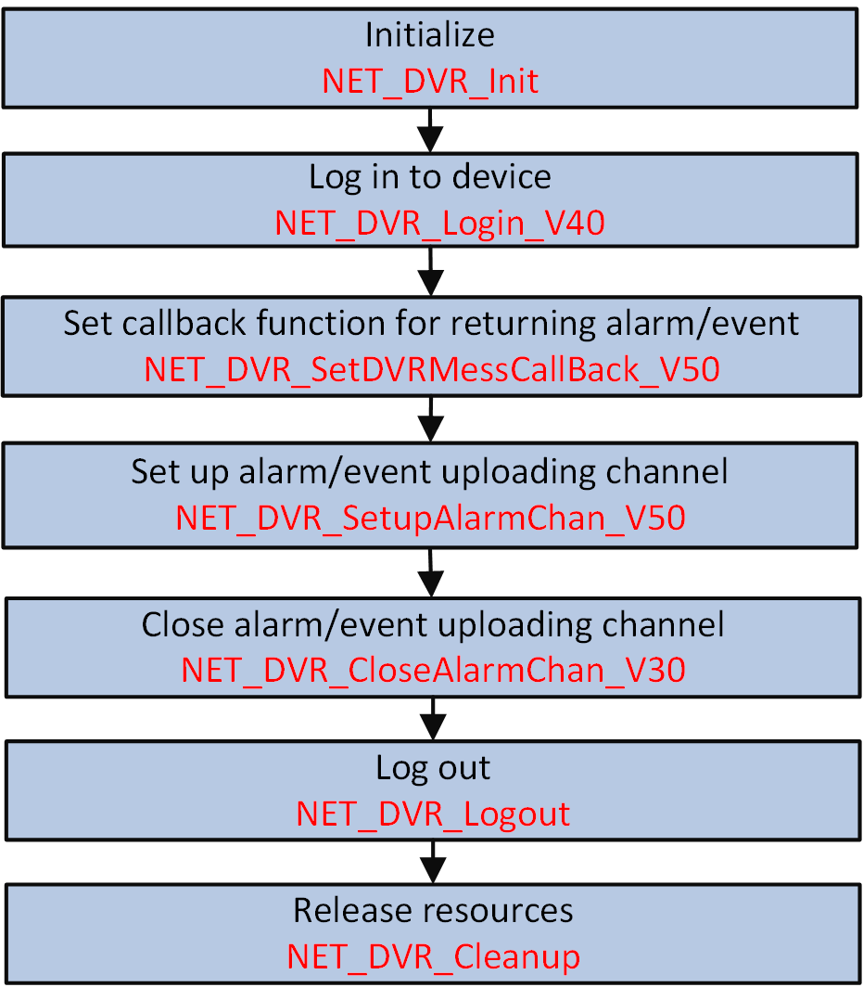

When the alarm is triggered or the event occurred, the secondarily developed third-party platform can automatically connect and send alarm/event uploading command to the device, and then the device uploads the alarm/event information to the platform for receiving.
Make sure you have called NET_DVR_Init to initialize the development environment.
Make sure you have called NET_DVR_Login_V40 to log in to the device.
Make sure you have configured the alarm/event parameters, refer to the typical alarm/event configurations for details.

Figure 1 Programming Flow of Receiving Alarm/Event in Arming Mode#include <stdio.h>
#include <iostream>
#include "Windows.h"
#include "HCNetSDK.h"
using namespace std;
void main() {
//---------------------------------------
// Initialize
NET_DVR_Init();
//Set connection time and reconnection time
NET_DVR_SetConnectTime(2000, 1);
NET_DVR_SetReconnect(10000, true);
//---------------------------------------
// Log in to device
LONG lUserID;
//Login parameters, including device IP address, user name, password, and so on.
NET_DVR_USER_LOGIN_INFO struLoginInfo = {0};
struLoginInfo.bUseAsynLogin = 0; //Synchronous login mode
strcpy(struLoginInfo.sDeviceAddress, "192.0.0.64"); //Device IP address
struLoginInfo.wPort = 8000; //Service port No.
strcpy(struLoginInfo.sUserName, "admin"); //User name
strcpy(struLoginInfo.sPassword, "abcd1234"); //Password
//Device information, output parameter
NET_DVR_DEVICEINFO_V40 struDeviceInfoV40 = {0};
lUserID = NET_DVR_Login_V40(&struLoginInfo, &struDeviceInfoV40);
if (lUserID < 0)
{
printf("Login failed, error code: %d\n", NET_DVR_GetLastError());
NET_DVR_Cleanup();
return;
}
//Set alarm callback function
NET_DVR_SetDVRMessageCallBack_V50(0, MessageCallbackNo1, NULL);
NET_DVR_SetDVRMessageCallBack_V50(1, MessageCallbackNo2, NULL);
//Enable arming
NET_DVR_SETUPALARM_PARAM_V50 struSetupParamV50={0};
struSetupParamV50.dwSize=sizeof(NET_DVR_SETUPALARM_PARAM_V50);
//Alarm category to be uploaded
struSetupParamV50.byAlarmInfoType=1;
//Arming level
struSetupParamV50.byLevel=1;
char szSubscribe[1024] = {0};
//The following code is for alarm subscription (subscribe all)
memcpy(szSubscribe, "<SubscribeEvent version=\"2.0\" xmlns=\"http://www.isapi.org/ver20/XMLSchema\">\r\n<eventMode>all</eventMode>\r\n", 1024);
LONG lHandle = -1;
if (0 == strlen(szSubscribe))
{
//Arm
lHandle = NET_DVR_SetupAlarmChan_V50(lUserID, &struSetupParamV50, NULL, strlen(szSubscribe));
}
else
{
//Subscribe
LlHandle = NET_DVR_SetupAlarmChan_V50(lUserID, &struSetupParamV50, szSubscribe, strlen(szSubscribe));
}
if (lHandle < 0)
{
printf("NET_DVR_SetupAlarmChan_V50 error, %d\n", NET_DVR_GetLastError());
NET_DVR_Logout(lUserID);
NET_DVR_Cleanup();
return;
}
Sleep(20000);
//Disarm the uploading channel
if (!NET_DVR_CloseAlarmChan_V30(lHandle))
{
printf("NET_DVR_CloseAlarmChan_V30 error, %d\n", NET_DVR_GetLastError());
NET_DVR_Logout(lUserID);
NET_DVR_Cleanup();
return;
}
//Log out
NET_DVR_Logout(lUserID);
//Release resources
NET_DVR_Cleanup();
return;
}
Call NET_DVR_Logout and NET_DVR_Cleanup to log out and release resources.